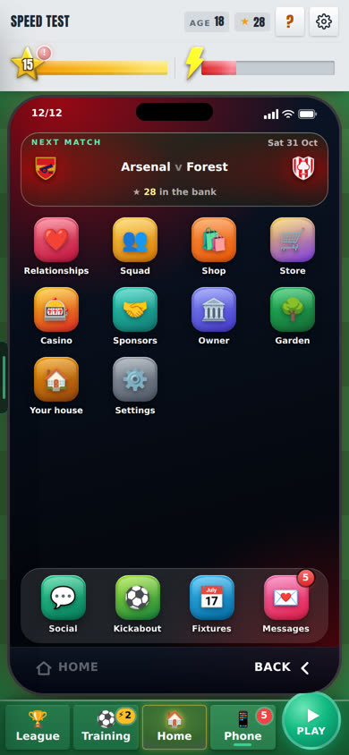
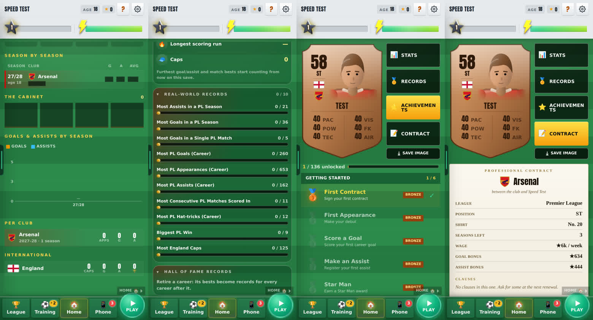
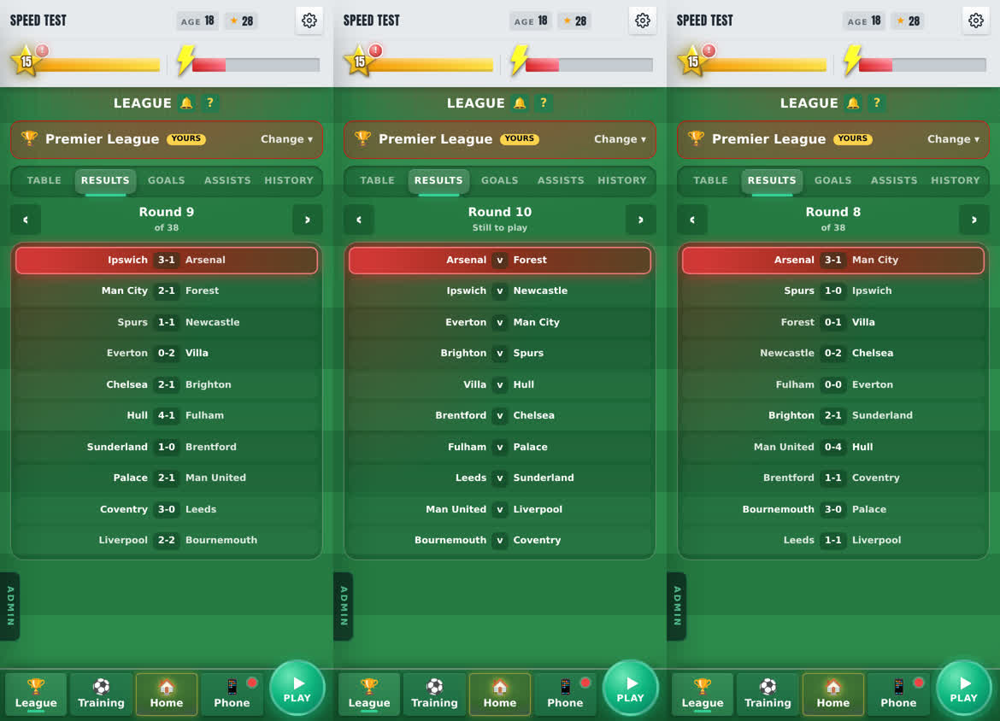
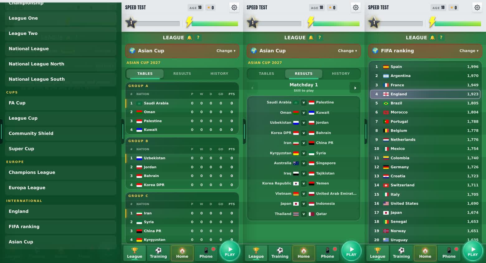
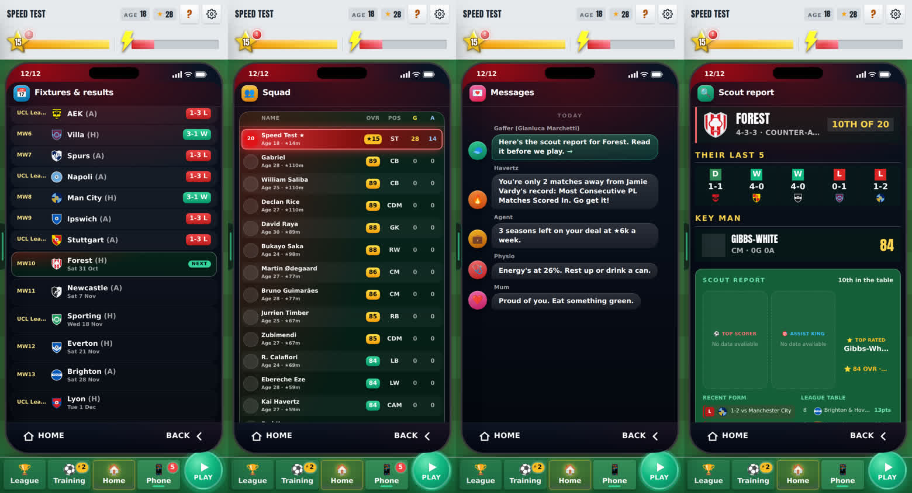

23 October 2026 · branch Mikey → main · 16 commits · build passes · stills seen in a test browser at phone size
5master-plan steps built
12/12 → 27/10phone clock on the same save
211nations in the FIFA ranking view
1.9 s → 0.3 sPhone back to Home
Check these
Bottom bar · League · Training · Home · Phone · Play on every screen
Home · Rep/Fame left, Goals/Assists right; boots line above the cans; Settings → Home numbers
Stats · swipe left of Home: card on the left, Stats · Records · Achievements · Contract
League · bar → League: Table · Results ‹ Round › · Goals · Assists · History; Change ▾ → International
Phone · Relationships, Squad, Fixtures & results apps; Messages → tap the gaffer's scout report
Phone clock · top-left of the phone: the day of your last game
Shots · about a third fewer wide misses
Midweek games · a quarter-week's wage extra for each one you play
Added
One bottom bar on every screen
League · Training · Home · Phone · Play, the same on Home, League, the Shop, Sponsors and every full screen. Home glows; the round Play button sits on the right. The Phone opens the boss's talk while it is due. seen

The Stats page: your card and four tabs
Your card shows whole on the left, with Stats · Records · Achievements · Contract stacked beside it and Save image under them. seen

What each tab holds
Stats: this season and your career side by side (Apps, Goals, Assists, Trophies), season by season (tap one for the awards you won), the cabinet, goals and assists by season, per club, one International row.
Records: your bests open; real-world records and Hall of Fame folded shut.
Achievements: one list, rarity only (Bronze, Silver, Gold, Legend), no XP, no box of its own. Your first steps leave once done.
Contract: on paper, with both signatures, and Propose renewal.
League is one page for every competition
Opens on your league's table. Tabs: Table, Results, Goals, Assists, History. Results opens on the latest round; ‹ › walks back through played rounds and on to future fixtures. seen

More
Other leagues' past rounds are replayed from each round's own seed: all 6 matched the stored scores exactly (measured). Only each league's latest round has scorer names.
History: winner and runner-up of every league and cup, each season. It fills in from the end of this season.
Change ▾ → International: your nation, the full FIFA ranking (211 nations, yours lit), and every international competition with its group tables, rounds and finals. A competition appears once it is drawn.
Scout, Awards, Squad, Fixtures and the separate Table page left League.
International on the League page
Every international competition like a league: groups, ‹ Matchday ›, and every final the game has played. seen

The Phone does the rest
New apps: Relationships, Squad, Fixtures & results. League and Awards left the phone. seen

More
Fixtures & results: every game of the season in date order, league, cups and Europe, with score and W/D/L; the next game is lit and the list opens on it.
Messages: the gaffer's scout report before each match (tap to read it), each sponsor offer (tap for Sponsors), and a team-mate when you are close to a record: "You're only 2 matches away from Jamie Vardy's record" on the test save.
Left out for energy: drink a can
Under the manager's office: drink one, or buy and drink one, to make the bench. seen
Run hint
Under the run joystick: "Steer into space: he may pass it back". seen
Changed
Home is cleaner
Rep and Fame on the left of your player, Goals and Assists on the right (Settings → Home numbers: Sides | Top). Your boots and what they give sit above the cans. The crests sit side by side. Removed: the record line, the transfer window line, the links row, non-urgent chips. seen
Shots miss a third less
Sideways spread cut by a third. One-on-ones scored 46.9% → 48.1%. measured
Midweek games pay extra
Every club game you play that is not on a Saturday pays 25% of the weekly wage on top. About 13 a season at the start. measured
Crowded chances zoom in
Five or more men within 10 m of the ball: the camera frames the crowd. Header zoom 1.03 → 1.62, volley 1.12 → 1.60, one-on-one 1.17 → 1.47. measured
The Shop's tabs moved to the top
Shop · For You · 3D · Boots · Sponsors are a strip under the header; the main bar is at the bottom. seen
Top-down dribble view shows more
29 m → 40 m deep. seen
Fixed
The phone's clock showed the wrong day
It read the date as if every week were a league week, so with cup and European games it ran ahead: 12/12 when the next match was Sat 31 Oct. Now 27/10, the day of your last game (a Tuesday Champions League match). measured
Why
The clock counted the game's week number as a league matchweek. Cup and European games add weeks, so it drifted.
Now it reads the real date of your last played fixture; before the first game, the day before it. lib/star/phoneClock.ts
Scorers are written once
"Smith 5', Smith 15'" is now "Smith 5', 15'" on every league's results. not yet seen
Why
The All-leagues results printed the name before every goal; the old League screen already grouped them. Scorer names need squad data, which the test browser does not have, so this is not seen yet.
Awards say the month, not the week
"S1 wk 36" is now "Season 1 · February", with the league's name: "National League Player of the Month". seen
Going back to Home is quick again
Phone → Home took 1.9 s (it re-saved the player's picture every visit). Now 0.3 s. measured
Extra time: a player taken off stays off
He was handed chances again in extra time after coming off at 84'. measured
Music changes cleanly
A new track fades the old one out first: two tracks at once dropped from 2.1 s to 0.1 s. measured
Smaller fixes from the first playtest
Stamina bar hidden on commentary and full time; the cup draw opens at full size; Swipe right on the Showroom goes Home; a chance closes live scores so you come back to the commentary; Premier League records count Premier League games only. seen
Known issues
Scorer names on League results not seen yet Low
The test browser has no squad data. Check on the real site: League → Results.
History is empty until a season ends Low
New saves start counting at the end of this season; older saves show the winners they kept.
Before launch: cookie consent, error reports, two database changes High
No Accept/Reject pop-up yet for the visit counter (UK rules need one). Sentry has no project yet, so crashes go unreported. star_xp_config.sql and star_tuning_notes.sql still need running in Supabase.
Next
Launch items
Waiting on Mikey's calls: cookie pop-up and Privacy page, Sentry setup, the two database changes, which roadmap base-game items go in.
Room in the database
Later, as decided.
Previous versions
v0.20 · 2026-10-21 · Game music: 11 original orchestral tracks for home, matches, full time and the Ballon d'Or night, behind a Settings switch
v0.19 · 2026-10-20 · Mikey's new pop-ups (scoreboard goals, TV captions), the real 10-round FA Cup, team-mate goals kept on reload, PL Draft FC 27 back to 20 clubs
v0.18 · 2026-10-19 · The world season: every league, cup and European competition played for real, week by week, with a screen to see them all; transfer talk fixes
v0.17 · 2026-10-18 · The new transfer window (clubs come to you, season letters S to D), the world ages (decline from 31, retire 35–41, replacements), real kits for 211 nations, 1–2 post-match videos
v0.16 · 2026-10-13 · Gameplay review: fewer feed videos that wait for ▶, upright goal posts, achievements unlock and level you up at once; test switches for new framing and headers/volleys
v0.15 · 2026-10-13 · International football: call-ups, duty mode, watching on TV, scorers for every goal; the Ballon d'Or counts club and country (Star Man out); casino scandals
v0.14 · 2026-10-09 · Real Premier League shots playable as test chances; Chances (testing): about 9 Kane-style highlights a match, Old still the default
v0.13 · 2026-10-08 · Play-off, cup and European round-ups with animated brackets; the real UEFA knockout; two-legged League Cup semis; ±25% wage when your club goes down or up; relegation day
v0.12 · 2026-10-08 · The ovation's hugs, dap-ups, pat and claps made in Blender; the farewell's 3D ovation checked in a real match
v0.11 · 2026-10-08 · 3D standing ovation; centre-back Golden Boot and day-one line-ups fixed; more assists; clearances, negotiations and Relations reworked
v0.10 · 2026-10-04 · Relationships rebuilt: bars that move slowly, one game per relationship, happiness decides recovery, no Sponsors bar; injuries switched off
v0.9 · 2026-10-03 · XP rebuilt (slower start, XP by the minute, no double pay) and the XP Book to edit every amount; 3D garden, North/South 2026/27, Club Data
v0.7 · 2026-09-30 · A new 1-10 star career rating separate from overall, 7 boots, dearer Style, 2 training sessions a week, restyled training, contract terms
v0.6 · 2026-09-27 · Five levels of every boot and lifestyle item, a moving ball on the strike screen, commentary that barely repeats, new chants
v0.5 · 2026-09-26 · How you get picked: win your shirt from a better-rated rival, form over 3 games, subs when the score says, cup rotation
v0.4 · 2026-09-25 · Training rebuilt the New Star Soccer way: 30 fixed levels, three tries, stars raise the skill; pace, vision and free kick matter in matches
v0.3 · 2026-09-25 · What you see on the pitch matches where people stand: nearer players and the ball drawn right, corners from the flag; trophy pictures, instant energy modes, feed likes
v0.2 · 2026-09-22 · Energy master plan: in-match energy modes, a real ticking clock, half-time KIB cans, rest days, tougher fatigue rules
v0.1 · 2026-09-21 · Economy, fame and reputation rebuild: Premier League wages to ★100k, fame levels, one reputation number, 50-season careers